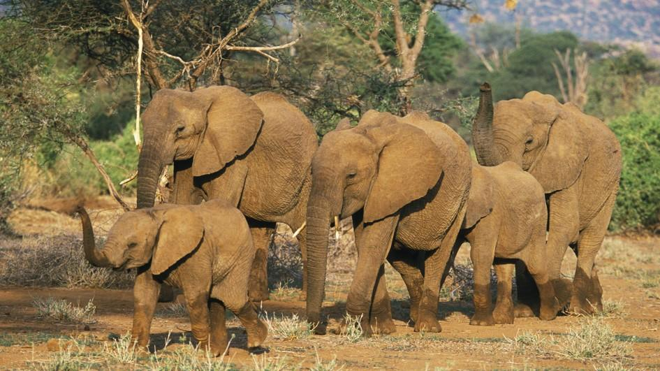
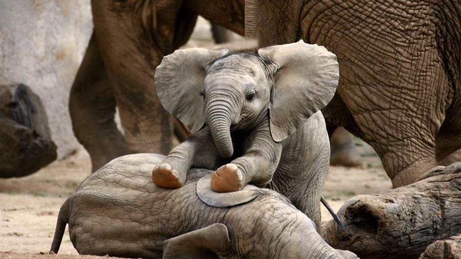

Слоны

Слоны — уникальные по своей анатомии и физиологии животные. Они настолько сильно отличаются от всех прочих млекопитающих, что выделены в самостоятельный отряд Хоботных, который включает всего 2 вида. В ископаемом состоянии известно гораздо больше видов вымерших хоботных, из которых самым известным является мамонт. В настоящее время сохранились только африканский и индийский слоны.
Внешний облик этих животных настолько же схож, насколько слоны отличаются от всех прочих животных. Первое, что бросается в глаза — это размер. Слоны воистину гиганты животного мира, самые крупные из всех сухопутных существ. Индийский слон достигает высоты 2,5 м и веса 3-5 т, африканский и того крупнее — его высота достигает 4 м, а вес 5-7 т. Туловище у слонов очень массивное, голова сравнительно крупная, ноги пропорционально мощные и толстые. Немалых размеров достигают и уши, а вот глаза, наоборот, очень маленькие. Дальность зрения у слона не очень, а вот слух отменный. Слон способен услышать раскаты грома на расстоянии до 100 км! Такой слух объясняется тем, что слоны способны слышать (и издавать сами) инфразвуки. Этими звуками стада слонов пользуются для общения на большом расстоянии, ведь низкочастотные волны распространяются на длинные дистанции. Уши слонов очень подвижны и животные постоянно машут ими. С одной стороны обширная поверхность ушей, через которую прокачивается кровь, способствует охлаждению организма (особенно хорошо это заметно у африканского слона); с другой стороны уши выполняют коммуникативную функцию. Движениями ушей слоны приветствуют соплеменников и угрожают врагам.
Но самый необычный орган слона конечно же хобот. Хобот это не нос, как думают многие, а совершенно уникальный орган, образованный сросшимися носом и верхней губой. При этом хобот имеет собственную систему мощных мышц и сухожилий. Благодаря такому строению хобот обладает одновременно силой и гибкостью. Мощь хобота такова, что с его помощью слон способен крушить деревья, подымать бревна. На конце хобота расположен подвижный и чувствительный вырост, с помощью которого слон способен осязать и манипулировать мельчайшими предметами. Слоны хорошо распознают фактуру различных поверхностей, могут, к примеру, подымать монеты или рисовать кистью. Хобот играет в жизни слона незаменимую роль: он необходим животному для добывания пищи, защиты, общения.
Объятия хоботом — обязательный атрибут дружеских отношений.
С помощью хобота слоны также пьют воду, ведь пить ртом высокий и короткошеий слон не может. Только маленькие слонята могут сосать мать ртом, а взрослые слоны втягивают воду хоботом, а потом только заливают себе в рот. Слоны, лишенные хобота из-за травмы, пытаются пастись на коленях, но в конце концов погибают.
Могучее тело слона покрыто толстой и грубой кожей. Она испещрена многочисленными глубокими морщинами. Взрослые слоны практически лишены шерсти, а новорожденные слонята покрыты редкой жесткой щетиной. Окраска слонов однородная серая или буроватая.
Шкура слона покрыта редкой щетиной.
Своими размерами и телосложением слон производит впечатление неповоротливого и шумного животного. Когда хотят подчеркнуть неловкость человека говорят «как слон в посудной лавке». Но и это мнение ошибочно. Слон передвигается практически беззвучно. Достигается такой эффект благодаря особому строению подошвы, она пружинит при надавливании на стопу, а потом приобретает первоначальную форму. Кстати, задние ноги слона, в отличие от других четвероногих, сгибаются вперед.
На пальцах слона есть крошечные копытца.
Но, как оказывается, у слонов в запасе есть еще один парадокс. Дело в том, что массивный череп слона содержит мозг относительно маленького размера. Казалось бы животные с таким строением мозга не должны отличаться интеллектом, но как раз слоны то и относятся к одним из самых умных млекопитающих.
Слоны обитают в тропическом поясе. Ареал африканского слона простирается вдоль экватора и на юг до Капской области. Когда-то эти животные населяли и северную часть континента, но с расширением пустыни Сахары вынуждены были отступить на юг. Индийские слоны обитают на полуострове Индостан и в Индокитае. Популяции африканского слона встречаются как в густых тропических лесах, так и в открытых саваннах, граничащих с полупустынями. Индийские слоны исключительно лесные жители. Оба вида слонов ведут стадный образ жизни. Стада слонов состоят из самок с молодняком, возглавляет их старая опытная слониха. Самцы всегда держатся особняком, присоединяясь к стаду лишь на время спаривания. Слоны поддерживают между собой чуткие отношения. Все члены стада связаны между собой родственными связями и старые животные помогают молодым заботится о потомстве. Слонята также очень привязаны к матери и пользуются всеобщей опекой. Между слонами не бывает стычек за исключением брачного периода, когда самцы устраивают ожесточенные драки за обладание самкой.
В остальных случаях слоны проявляют взаимовыручку: они немедленно отзываются на тревожный крик соплеменника, дружно встают на его защиту и даже помогают раненым собратьям. Слоны общаются с помощью низких утробных звуков, а в случае опасности издают громкий трубный рев. Слоны обладают исключительной памятью, они помнят места водопоев и кормежек на много миль вокруг, узнают соплеменников после долгой разлуки. Высокий уровень социальных связей у слонов проявляется еще в одном феномене — слоны способны распознавать умерших собратьев. Когда стадо слонов натыкается на скелет умершего животного, они останавливаются и затихают. Иногда слоны прикасаются хоботом к скелету и ощупывают его, очевидно слоны способны идентифицировать «личность» погибшего собрата.
Питаются слоны растительной пищей — ветками деревьев и кустарников, листьями и плодами. В сутки слон съедает до 100 кг корма.
Слоны пережевывают пищу крупными коренными зубами, которые меняются по мере стачивания. В поисках корма им помогают бивни — пара гигантских резцов, выступающих изо рта. У африканских слонов их размер может достигать 2-3 м, у индийского слона бивни короче и бывают только у самцов.
Слоны используют бивни как рычаги для корчевания деревьев, а также применяют их в боях за самку. Африканские слоны бивнями обдирают кору баобабов в поисках сочной рыхлой древесины. Эти животные также нуждаются в обильном питье и ходят к водопоям за много километров. Кстати, слоны любят купаться, поливая себя водой из хобота, они отлично плавают. Плывущий слон погружается в воду с головой, выставляя наружу только кончик хобота.
Хотя слоны предпочитают передвигаться неспешным шагом, они могут быстро бегать, развивая скорость до 50 км/ч.
Спаривание слонов не приурочено к какому-то определенному сезону. В брачный период у самцов выделяется темный секрет из околоушной железы, в это время они очень агрессивны и опасны для окружающих. Беременность слонихи длится 20-22 месяца. Она рождает одного слоненка весом 90-100 кг.
Слоненок сосет молоко ртом, а не хоботом.
Соски слоних расположены не в паху, как у всех четвероногих животных, а между передними ногами, как у приматов. Слоненок нуждается в опеке до 5 лет, но и повзрослев сохраняет привязанность к матери и другим родичам (бабушке, теткам). Часто слонята при передвижении держатся хоботом за хвост матери. Взрослыми слоны становятся в возрасте 12-15 лет, а живут до 60-70 лет.
Казалось бы у самого крупного животного не может быть естественных врагов. Действительно, взрослые слоны практически неуязвимы, хотя иногда конфликтуют за место у водопоя с носорогами. Однако маленькие слонята беззащитны перед нападением львов и крокодилов. Только эти хищники осмеливаются атаковать слонов.
Главным же врагом слонов остается человек. Люди охотятся на слонов в основном ради бивней — источника драгоценной слоновой кости. Но в хозяйстве находят применение и мясо, кожа, кости слонов. Например, жаркое из хобота считается деликатесом. Из-за варварского промысла африканские слоны во многих местах были на грани вымирания. Для их охраны были созданы многочисленные заповедники, но и после этого положение слонов не улучшилось. Размножившиеся слоны, ограниченные территорией заповедника стали страдать от нехватки корма и их опять пришлось отсреливать. В некоторых случаях помогает переселение слонов из мест, где их стало много, в районы, где их нет. Но охране слонов препятствуют контрабандисты и политические конфликты в странах Африки. На индийских слонов охота ради бивней не ведется, но их положение еще плачевней. Так как живут индийские слоны в самом густонаселенном регионе мира, они просто лишаются естественных местообитаний, захватываемых людьми. Диких слонов ловят с целью приручения, но в неволе эти животные почти не размножаются. Так из природы изымаются последние особи. Ручные слоны одни из самых древних одомашненных животных. Испокон веков их использовали как тягловую силу для вспашки земли, перевозки людей и грузов, и в военных целях. Слонов можно приучить подымать и складывать предметы, атаковать по команде и просто выполнять различные трюки. К сожалению, способности цирковых животных вырабатывают жестокими методами. Домашние слоны добродушны по природе и часто терпят издевательства нерадивых хозяев, но прекрасная память слона может сослужить человеку плохую службу. Помня нанесенные обиды, слоны склонны к фрустрации (болезненному переживанию и нагнетанию эмоций). Длительный стресс может привести к нервному срыву и тогда слон впадает в бешенство. В этом случае животное полностью выходит из под контроля и нападает на всех живых существ в пределах досягаемости. Остановить слона в этом случае может только пуля. Известно немало случаев гибели домашних слонов и людей по этой причине.
Вверх